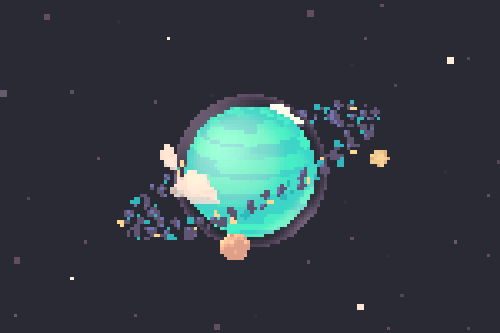

Juegos retro creados por Doomer!
En el extenso Multiverso de Doomer existen realidades muy muuy lejas y mas que extrañas, donde seres de todo tipo pueden existir, desde patatas con vida propia hasta Dumys fuera de su tiempo y realidades!
Pasa por la pagina de ITCH.IO de Doomer y descubre a estos curiosos personajes y a sus mundos llenos de cosas curiosas y bizarras!
Recuerda que todos los juegos de Doomer se pueden jugar en cualquier dispositivo como PC MAC Linux Android o IOS con un emulado de Gameboy Classic!
Incluso en cosolas con sistema operativo OpenDingux como Powkiddy o Anbernic
Si quieres que algun personaje tuyo aparezca como skin en The Potato Game mandame tus archivos a cualquiera de mis redes sociales por mensaje directo, para crear tu propia skin sigue las instrucciones que vienen en el archivo ZIP del juego The Potato Game!
En el juego hay cameos y personajes de otros juegos de la comunidad de GBStudio!
Descarga comparte y disfruta!
-------------------------------------------------------
Links y Herramientas!
-------------------------------------------------------
-------------------------------------------------------
